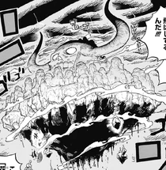
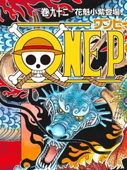

.webp)
Уо Уо но Ми, модель: Сэйрю — это дьявольский плод типа мифический зоан, который позволяет пользователю превращаться в полную или гибридную форму Лазурного дракона. Он был съеден Кайдо.
.webp) Этимология
Этимология
Уо (魚?) на японском означает «рыба». Сэйрю (青龍?) на японском означает «Лазурный дракон».
Внешний видПлод имеет шаровидную и слегка продолговатую формы, чем-то напоминающую шишку. Его синий внешний вид напоминает чешую: каждая «чешуйка» имеет небольшой тёмно-синий овал посередине, на котором изображена фирменная спираль дьявольских плодов внизу, в то время как внешние части чешуек имеют более светло-голубой оттенок. На вершине плода светло-оранжевые листья и два одинаковых отдельных стебля, один из которых пурпурный, а другой - более светло-розового оттенка.
Уо Уо но Ми позволяет пользователю превращаться в огромного змееподобного дракона. Входя в эту форму, Кайдо сильно вырастает и в размерах может даже равняться с маленьким городком. В дополнение пользователю даётся несколько необычных способностей. Одна из них — способность создавать облака в форме пламени, которые парят в воздухе и, опираясь на них, пользователь способен перемещаться в воздухе с их помощью.
Также, пользователь Уо Уо но Ми получает способность использовать атаки со свойствами разных стихий, которые он может выдыхать из своего рта. Текущий пользователь данного дьявольского плода, Кайдо, наиболее часто использует огонь, который он может выдыхать и распространять со скоростью несколько километров в несколько и с помощью него мгновенно разрушать целые конструкции и наземные массивы, которые попадают в радиус атаки. Кроме того, пользователь может создавать небольшие разряды молнии из своего рта и, дуя, выпускать потоки воздуха в виде серпов. Благодаря тому, что эти атаки могут преодолевать большие расстояния, пользователь, паря в воздухе и находясь вне зоны досягаемости противника, может сокрушать их.
Благодаря огромным размерам тела дракона, пользователь способен наносить своим телом серьёзный ущерб целым структурам, просто соприкоснувшись с ними; когда Кайдо в пьяном виде пролетал над городом Окоборэ, жители полагали, что он, скорее всего, быстро уничтожит их город. Было сказано, что чешуя на теле дракона, в которого способен превращаться пользователь Уо Уо но Ми, очень жесткая, хотя в случае Кайдо прочность его формы дракона усугубляется из-за его и так чрезвычайно прочного тела.
Из-за того, что пользователь после трансформации в дракона занимает огромное количество места, нахождение в замкнутом пространстве сильно ограничивает его способность к использованию преимуществ его силы и в зависимости от того, насколько его заботит окружающее, превращение в дракона в тесном пространстве может стать обузой для пользователя и его союзников. Кроме того, из-за огромного тела пользователя он становится лёгкой мишенью для атак противников. Однако этот недостаток может нивелироваться гибридной формой зоан. О других слабостях Уо Уо но Ми, за исключением стандартных слабостей дьявольского плода, пока неизвестно.
 Использование Довольно часто Кайдо использует Уо Уо но Ми в бою. Однако, в отличие от большинства других пользователей зоана, которые до этого момента появлялись в сюжете, Кайдо обычно начинает бой в своей полной звериной форме и в его процессе, когда он серьёзнее начинает относится к происходящему, Кайдо возвращается обратно в человеческую форму. По-видимому, в драконьей форме он сражается только против серьёзных противников один на один. В этой форме Кайдо часто парит на значительном расстоянии от противников и атакует их своими мощными стихийными ударами, чаще всего огненным дыханием. Примечательно, однако Кайдо, когда использует свою полную звериную форму, почти никогда не является серьезным. Он постоянно подставляется под атаки, проверяя силы противника. Когда Кайдо понимает, что противник слишком слаб, он его попросту добивает. Но было исключение, когда Кайдо а также Большая Мамочка сражались против пиратов Худшего Поколения. Тогда Кайдо использовал свою гибридную форму, что делает крайне редко, поскольку не видел достойных противников, точнее встречал их очень редко. Но в тот момент он понял, что его противники не совсем слабые, и пора заканчивать играть с ними в игры. К слову, от процесса он был в полной экстазе, так как давно не испытывал таких чувств. Вне боя Кайдо может создавать облака пламени, как для полёта, так и для поднятия в воздух других объектов. Таки образом он поднял в воздух всю Онигасиму, чтобы продолжить исполнение проекта «Новая Онигасима». Техники Bolo Breath Дыхание Боло Дыхание Боло (熱息ボロブレス Боро Бурэсу?, буквально означает «Тепловое дыхание»): наиболее часто используемая атака Кайдо, при которой он собирает огонь во рту, прежде чем «выдохнуть» его в огромный конический взрыв по его цели. Этот взрыв распространяется быстро (в аниме покрывает огромное расстояние за считанные секунды) и чрезвычайно силён. Он может мгновенно разрушить большую структуру (например, руины замка), оставив окружающую местность (например, вершину горы) разнесенной на куски и выжженной, может поджечь значительную часть леса, и даже быть разделённым немногочисленные более мелкие огненные шары летящие как пули. Несмотря на силу и размах этой техники. Когда Райдзо применил эту атаку обратно к Кайдо через свои свитки, она оказалась способной несколько повредить тело дракона последнего. Боло — это термин, используемый в Центральной Америке и Мексике и означающий «пьяный». В аниме показано, что Кайдо может разделить эту атаку на несколько меньших выстрелов. Это распределяет урон и затрудняет уклонение, но также делает его значительно слабее, чем исходная форма. Он использовал его против Девяти Красных Ножен, чтобы заставить их держаться на расстоянии. Kaido's Wind Scythes Кайфу Кайфу (壊風 Куйфу:?, дословно означает «Разрушающий ветер»): атака, при которой Кайдо сильно дует, тем самым создавая мощные серповидные лезвия ветра, которые могут легко прорезать твёрдый камень, а также человеческие тела. Этот приём был впервые использован в бою Кайдо против Девяти красных Ножен на крыше купола черепа Онигасимы, отрубив Кикунодзё левую руку, но эта техника не была названа до тех пор, пока Кайдо не использовал её против членов Худшего поколения на той же крыше. Дэндзиро описал лезвия ветра как камаитати (かまいたち?), японского термина, обозначающийего резкий вихрь, который происходит от ёкая Камаитати. Кайдо также способен выполнять это движение в форме Человека-зверя. В этом случае он быстро взмахивает своим Хассайкаем, чтобы создать вертикальную ветровую лопасть в форме полумесяца, которая летит прямо вперед, подобно Тобу Дзангэки . Tatsumaki '''Тацумаки''' Тацумаки (龍巻 Тацумаки?, дословно означает «Смерч дракона»): Кайдо скручивает своё драконье тело в кольцо, вызывая вокруг себя несколько торнадо. Из-за своей скорости ветра эти торнадо могут отрывать людей от земли и в пределах досягаемости Кайдо в воздухе, где он может их проглотить. Эта техника была впервые использована против членов Худшего поколения на крыше купола-черепа Онигасимы. Она была эффективена в захвате беззащитного Монки Д. Луффи, но Ророноа Зоро смог нейтрализовать её с помощью своей собственной техники Кокудзё: О Тацумаки. Название атаки по-японски означает «торнадо» (竜巻 тацумаки?), но с кюдзитай кандзи «дракон» (龍?) вместо синдзитай (竜?). Тацумаки Кайфу (龍巻壊風 Тацумаки Кайфу:?, дословно означает «Разрушающий ветер смерча дракона»): атака, сочетающая в себе Тацумаки и Кайфу. Кайдо вращает нижнюю часть своего удлиненного тела дракона с огромной скоростью, имитируя тем самым торнадо. Затем он дует серповидными лезвиями ветра к своему вращающемуся телу, заставляя лезвия непредсказуемо летать в разных направлениях. Кайдо также издает молниеносный рёв при выполнении этой техники, но само по себе это не похоже на часть атаки. Этот приём впервые был использован Кайдо в борьбе против Худшего поколения. Kaen Daiko '''Каэн Дайко''' Каэн Дайко (火龍大炬かえんダイコ Каэн Дайко?, буквально означает «Великий факел огненного дракона»): Кайдо выдыхает большое количество пламени изо рта, образуя гигантского огненного дракона вокруг своего тела дракона. Жар его огненного дракона почти мгновенно плавит всё, с чем соприкасается, не позволяя противникам коснуться Кайдо, которому Луффи, пользователь продвинутого хаки вооружения (Рюо), может противостоять ему благодаря тому, что ему не нужно вступать в физический контакт. Название техники, вероятно, является отсылкой к рассказу ракуго Каэн Дайко (火焔太鼓?, «Пылающий барабан»). Сёрю: Каэн Хакке (昇龍 火焔八卦 Сё:рю:: Каэн Хаккэ?, дословно означает «Восходящий дракон: Пламя Восьми Триграмм»): Кайдо делает выпад вверх в своем состоянии Каэн Дайко. История38 лет назад, в день инцидента в долине Бога Шарлотта Линлин подарила этот плод Кайдо, когда они ещё входили в состав пиратов Рокса и были повержены. Большая Мамочка считает этот подарок пожизненным долгом, от которого Кайдо никогда не избавится.
ПрочееТрансформация и способности этого плода очень напоминают «неудавшийся» искусственный дьявольский плод, созданный Вегапанком, который съел Кодзуки Момоносукэ. Иронично, что, несмотря на то, что есть род зоанов (Рю Рю но Ми), названный в честь драконов, это единственный показанный до сих пор дьявольский плод, который на самом деле позволяет превращаться в дракона (в отличие от плодов Рю Рю но Ми, которые позволяют превращаться в динозавров), этот плод назван не в честь драконов, а в честь рыбы. В настоящее время это единственный известный дьявольский плод типа зоан, названный в честь водного существа. Тем не менее, любые потенциальные подводные способности, которые плод может предоставить, аннулируются из-за того, что вода деактивирует любые способности дьявольских плодов. Хотя этот плод классифицируется как мифический зоан, драконы являются реальными существами мира One Piece. Подтверждением этому является дракон, убитый Рюмой в Monsters, события в котором были подтверждены в арке Триллер Барка. Однако этот дракон больше походил на дракона западного стиля, чем на дракона Кайдо в восточноазиатском стиле. Другие драконы, которые были показаны, также были больше похожи на западных, и были искусственными формами жизни, созданными Вегапанком. Но в конце концов сила этого плода является мифической, по крайней мере потому, что это зоан рыбы, который позволяет превращаться в дракона. Уо Уо но Ми в настоящее время является единственным названием дьявольского плода, в котором оба слога являются гласными (ウオ) без каких-либо согласных звуков. Таким образом, это одно из самых коротких названий дьявольских плодов при транслитерации на кириллицу или латиницу. Из-за того, что этот плод назван в честь рыбы, его трансформация, вероятно, основана на мифическом гибриде дракона и рыбы Чивене, хотя тело Кайдо в форме его зоана больше напоминает типичного змеевидного восточного дракона. Сила плода также может быть основана на китайском мифе о драконьих вратах, в котором карпы превращаются в драконов, поплыв на вершину большого водопада. Забавно, что страна Вано, в которой живёт Кайдо, расположена на вершине водопада, по которому плавают гигантские карпы. Сила Уо Уо но Ми и его использование Кайдо во многом связаны с мифологией Восточной Азии.\ Подобно тому, как Кайдо называют «Сильнейшим существом в мире», восточные драконы считаются символом силы и поэтому чрезвычайно могущественны; либо полубожественные, либо буквальные боги. Традиционно считалось, что восточные драконы могут принимать человеческую форму, точно так же, как Кайдо может переключаться между человеческой и драконьей формой, будучи пользователем зоана. Форма дракона Кайдо имеет синий цвет цвета: в китайской культуре Лазурный дракон (также «Синий дракон», «Зелёный дракон» или «Сине-зелёный дракон») является Богом-драконом, который (будучи одним из четырёх символов китайских созвездий) представляет Восток и весенний сезон. На японском дракона называют «Сэйрю». Этому может соответствовать тот факт, что Кайдо живёт на Онигасиме, что к востоку от материка Вано. Цвет формы дракона, а также цвет облаков, создаваемых Кайдо, могут быть взяты с картин Утагавы Куниёси. Восточные драконы обычно изображаются с волосами, включая волнистую гриву, длинные, завитые усы, прикреплённые к каждой стороне их морды, а также волосы бороды. Это соответствует волнистой гриве, длинным и тонким усам и бороде Кайдо, которые он сохраняет в форме дракона. Находясь в форме дракона, Кайдо имеет 4 когтя на каждой руке. Такого рода драконы обычно изображаются в Монголии и Кореи (в отличие от трёх когтей, привычных для японских драконов). В Китае в эпоху имперских династий четырёхпалые драконы символизировали имперскую аристократию (например, принцев), обозначая имперский ранг чуть ниже самого императора (который символизируется пятипалыми драконами). Обычно на одеяниях изображались драконы. Во времена династии Мин существовали также существа, похожие на драконов, которых называли «фэйю» («летучая рыба») и «доуниу» («Медведь-Козерог»). У фэйю было четыре когтя; у него также были плавникоподобные крылья на туловище и рыбий хвост. У доуниу также было четыре когтя, а в некоторых случаях — три когтя и рог, изгибающийся наружу, как у водяного буйвола. Оба этих драконоподобных зверя стали изображениями на одеяниях, которые император подарил своим слугам. Драконы были в конечном итоге эксклюзивными для императора и имперских принцев, в то время как фэйю и доуниу, которые напоминали драконов, были сделаны по-разному, чтобы различать статус владельца. Восточные драконы, которые дышат огнем, считались относительно несерьёзным явлением. О тех, кто это делал, говорили, что они были довольно жестокими или были отправлены с небес на землю в качестве наказания. Способность Кайдо выдыхать поток огня (в отличие от водной ассоциации восточного дракона) могла быть больше вдохновлена концепцией европейских огнедышащих драконов. Первые намёки на способность Кайдо превращаться в дракона были в арке Панк Хазарда, когда Кин’эмон выразил чрезвычайную злость и ярость против одного из искусственных драконов Вегапанка. К тому же, когда Брук отметил, что ярость самураев напоминает человека, пытающегося отомстить за своих мёртвых родителей, Кин’эмон ответил, что в его случае это «не меньше», имея в виду, что Кайдо несёт ответственность за смерть его господина, Кодзуки Одэна. В игре One Piece: Pirate Warriors 4, Кайдо показал, что может использовать даже ледяные атаки. У дракона, в которого способен превращаться Кайдо, есть несколько сходств с Сэнроном, мифическим драконом из манги Жемчуг дракона, причём тёмные закрученные облака сопровождают обоих персонажей. Название этого дьявольского плода фактически отражено в стиле смеха Кайдо «Во-ро-ро-ро/Уо-ро-ро-ро» (ウォロロロ Уоророро?). Эта особая причуда также характерна для Гура Гура но Ми Белоуса, Хоро Хоро но Ми Пероны и Куку Куку но Ми Штрейзена, хотя случай Кайдо по-прежнему уникален тем, что только первая часть его смеха соответствует названию его плода.
